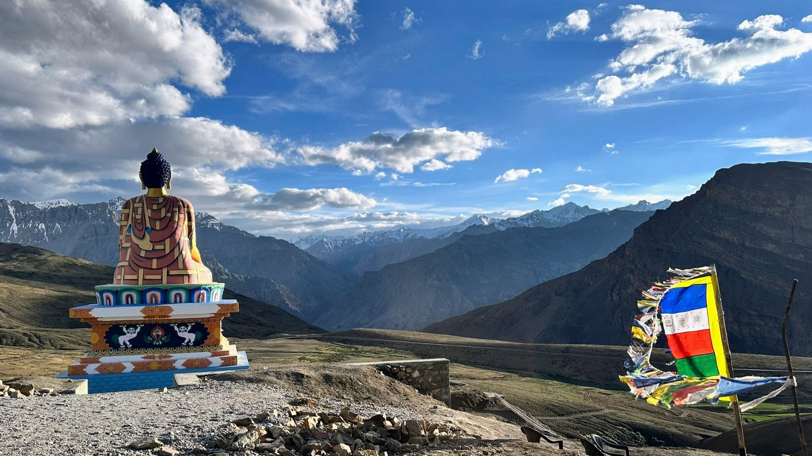

Highlights
- Key Monastery: A 1,000-year-old Tibetan Buddhist monastery perched on a hill, known for its breathtaking views and spiritual ambiance.
- Chandratal Lake: A crescent-shaped lake at high altitude, famed for its turquoise water, stunning reflections, and camping under starry skies.
- Pin Valley National Park: A unique cold desert biosphere with rare wildlife like the snow leopard, ibex, and Himalayan birds, perfect for trekking and nature photography.
- Komic Village: One of the world’s highest villages accessible by road, offering dramatic views of the Spiti landscape and housing the remote Komic Monastery.
- Tabo Monastery: A UNESCO-listed heritage site known for its ancient murals, stucco statues, and centuries-old Buddhist relics, often called the “Ajanta of the Himalayas.”
- Langza Village: Famous for fossil hunting, this village provides panoramic views of snow-capped mountains, including the stunning Chau Chau Kang Nilda peak.
- Dhankar Monastery and Fort: A cliff-top monastery with scenic views of the Spiti and Pin rivers’ confluence, offering hikes up to Dhankar Lake for serene solitude.





Manali to Spiti
Day 1: Manali to Kaza (8–10 hours drive)
- Route: Manali - Rohtang Pass - Kunzum Pass - Kaza
- Highlights: Drive through Rohtang Pass and Kunzum Pass, Chicham Bridge (Asia’s highest bridge), sunset at Chicham village
- Overnight: Stay in Kaza
Day 2: Kaza - Key Monastery - Kibber Village - Chicham
- Highlights: Key Monastery, one of Spiti’s largest and oldest monasteries; Kibber Village for stunning high-altitude views
- Activities: Visit Key Monastery, explore Kibber Wildlife Sanctuary, and visit Chicham Bridge
- Overnight: Stay in Kaza
Day 3: Kaza - Langza - Hikkim - Komic
- Highlights: Langza Village (known for fossil hunting), Hikkim (home to the world’s highest post office), Komic (one of the world’s highest motorable villages)
- Activities: Visit the Buddha statue at Langza, mail a postcard from Hikkim, and explore Komic Monastery
- Overnight: Stay in Kaza
Day 4: Kaza to Dhankar - Dhankar Lake Trek - Tabo
- Highlights: Dhankar Monastery, perched dramatically on a cliff; Dhankar Lake; Tabo Monastery (UNESCO World Heritage Site)
- Activities: Trek to Dhankar Lake for scenic views; visit Tabo Monastery, known for its ancient murals and artifacts
- Overnight: Stay in Tabo.
Day 5: Return to Manali
- Route: Tabo/Kaza - Kunzum Pass - Rohtang Pass - Manali
- Highlights: Scenic return drive with mountain views
- Start early as the journey to Manali takes around 8–10 hours